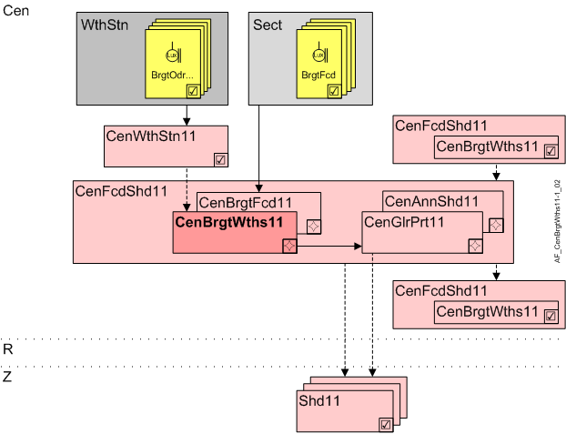

Central brightness from weather station (CenBrgtWths11)
Overview
Application function "Central brightness from weather station 11" (CenBrgtWths11) calculates the brightness on the facade based on 1...4 central sensors on a weather station.

Cen | Central functions |
WthStn | Weather station |
BrgtOdr... | Outdoor brightness North/East/South/West |
Sect | Facade sector |
BrgtFcd | Brightness in the facade sector |
CenWthStn11 | Central weather station 11, measurements for outside air temperature, brightness, solar radiation, wind speed, precipitation |
CenFcdShd11 | Central facade shading for automatic 11 |
CenBrgtWths11 | Central brightness from weather station 11 |
CenBrgtFcd11 | Central brightness on facade 11 |
CenGlrPrt11 | Central anti-glare protection 11 |
CenAnnShd11 | Central annual shading 11 |
R | Room |
Z | Shading zone in room segment |
Shd11 | Shading 11, for shading and daylight use with venetian blinds or awnings, group member in a facade sector |
Function
Brightness is measured with one or more sensors, typically on one weather station. The following configurations are supported:
- One common sensor (270...360°).
- Two to four sensors at the cardinal points.
In the event the sensor deviates from the cardinal points, a angle correction can be configured (AglCorr, angle correction of the weather station versus the cardinal point).
The AF calculates brightness on the facade. It considers:
- Orientation of the sensor and the facade.
The sensor with the closest orientation is selected, if available. - The solar position.
The sensor value is used if the sun shines on the facade.
The a replace value is used if the sun does not shine on the facade.
Note: AF CenGlrPrt11 provides the calculated effective brightness on the facade in BrgtEff.
Calculation:
Direct radiation is considered if at least 1 sensor is available.
Direct radiation is only considered if at least 3 sensors are available.
Available brightness sensors | Sun on the facade | Sun not on the facade |
|---|---|---|
No sensor | 0 lx | 0 lx |
1 sensor | Sensor value | 0 lx |
2 sensors at a right angle | Sensor with the closest orientation | 0 lx |
2 sensors at a right angle | Max. both sensors | 0 lx |
2 sensors in opposing direction | Sensor with the closest orientation | 0 lx |
2 sensors in opposing direction | Max. both sensors | 0 lx |
3 sensors | Sensor with the closest orientation | Min. all sensors |
3 sensors | Max. all sensors | Min. all sensors |
4 sensors | Sensor with the closest orientation | Min. all sensors |
Configuration
 Parameter
Parameter
Description | Parameter | Default value |
|---|---|---|
Angle correction -180...180 [°] | AglCorr | 0 [°] |
Interface
Interface | Description | Type | Ref. | Owner |
|---|---|---|---|---|
BrgtOdrNorth | Outdoor brightness north | AI | ◉ | Central function / Device |
BrgtOdrEast | Outdoor brightness east | AI | ◉ | |
BrgtOdrSouth | Outdoor brightness south | AI | ◉ | |
BrgtOdrWest | Outdoor brightness west | AI | ◉ | |
BrgtOdr | Outdoor brightness | AI | ◉ |
Engineering and commissioning
Directional sensors (90...180 °) are connected as per the cardinal point.
Nondirectional sensors (270...360 °) are connected to BrgtOdr.
Any combination possible, but at least 1 sensor is required.
Hierarchical grouping
Within CenFcd11, subordinate AF CenBrgtWths11 is required for CenGlrPrt11 / CenAnnShd11. These distribute their data to subordinate central AFs or directly to the connected room segments.